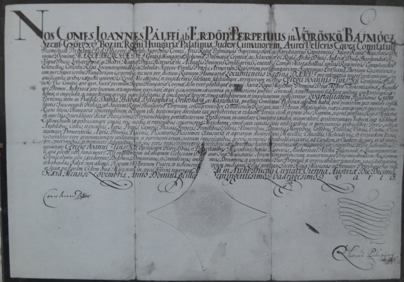
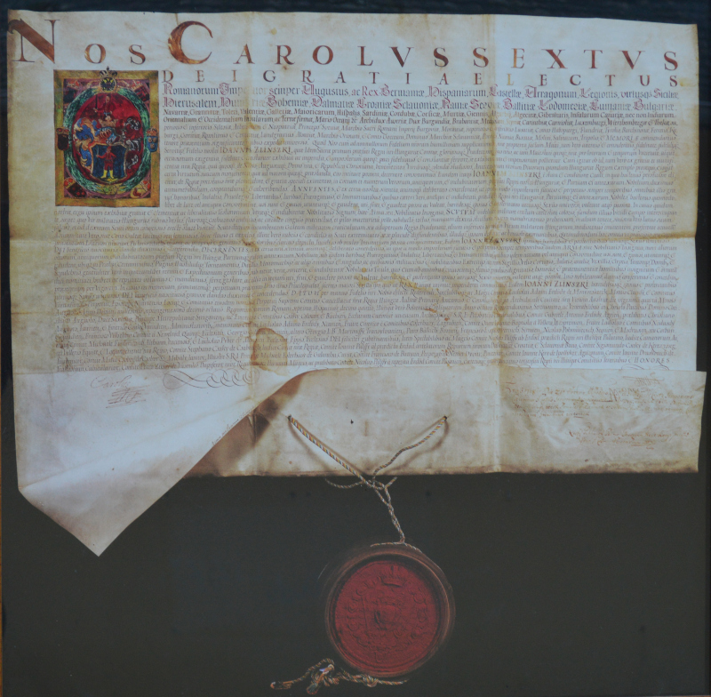
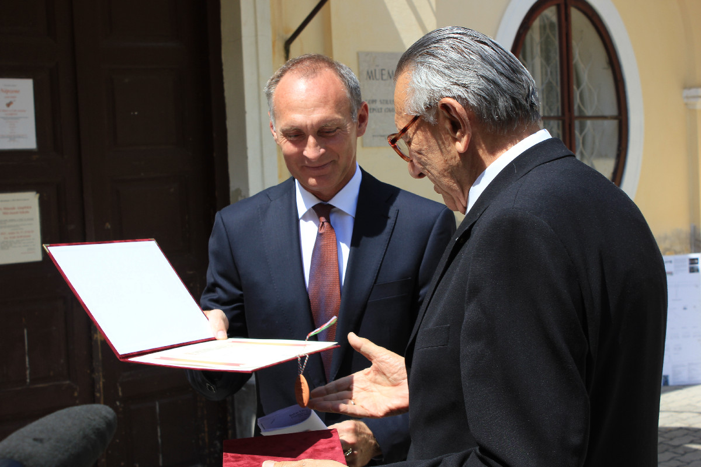
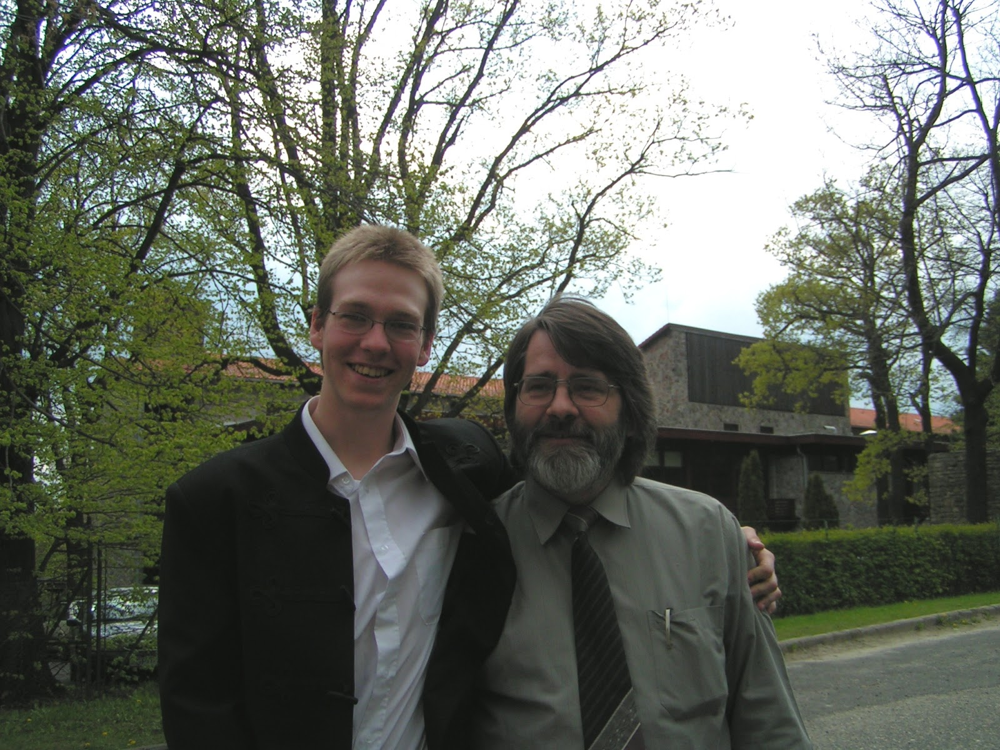

A Zlinszky család és a Gyóni Major
A Zlinszky család az egykori Morvaországból származik. Zlin városa – melynek nevéből családnevünk ered – Csehország keleti részén, a mai szlovák határhoz közel fekszik. Innen származott el a család a XVII. században előbb Nyitra megyébe, majd néhány generációval később Pest megyébe.
A gyóni adomány
„Egregius Johannes Zlinszky” azaz nemes és nemzetes Zlinszky János, aki 1687 körül Pest-Pilis-Solt vármegyében különböző tisztségeket viselt, 1735-től a vármegye első alispánja. A törökök kiűzésével kapcsolatos háborúskodások után elpusztult területek újratelepítése, az élet újraszervezése során szerzett érdemeiért királyi adományként birtokot kapott Gyónon, amint azt az 1744. november 16-án kelt donációs levél bizonyítja. Innen ered – és tart máig – a család gyóni ága.
Generációk
Az alapító és birtokszerző Zlinszky Jánost a család hét generációja követte Gyónon. Körülményeik és hajlamaik szerint nagyon különböző emberek. Volt közöttük csendes, otthonülő gazdálkodó és volt közéleti szerepet vállaló, tisztségviselő. Volt jogász, közgazdász, mérnök, katona. Volt 1848-as szabadságharcos honvéd főhadnagy és volt ’56-os, a Széna téren és a Körtéren harcoló forradalmár. Volt akadémikus tudós és volt vidám, társasági ember. Nagyon különbözőek voltak, de közös volt bennük az elkötelezettség értékeik, hitük, magyarságuk és a közösség iránt.
Elszakadás
A hetedik generációban ismét egy Zlinszky János – nagyapánk – birtokolta Gyónt. Bár ügyvéd volt Budapesten, a házat és a birtokot fejlesztette, építette. A második világháború végén a Budapestet ostromló szovjet hadsereg hadtápvonalába esett Gyón. Az oroszok tábori pékséget rendeztek be a házban és – a felhasogatott tüzifa kivételével – mindent elégettek, ami éghető volt: bútort, könyvet, parkettát, ajtót, ablakot.
A harcok múltával nagyapánk – keserves erőfeszítéssel – helyreállította a házat. Aztán 1950-ben kitelepítették, majd „mivel a tulajdonos nem lakik benne”, a házat elvették, államosították.
Visszatérés
Az épületet rövid ideig raktárként használták, majd iskolává alakították – a helyiek csak „Zlinszky-iskola”-ként emlegetik. A rendszerváltás után – Gyón ekkorra már Dabas része lett – a város Önkormányzata kifejezte szándékát, hogy a házat visszaadja a családnak. Hosszas töprengés és tervezés után, 2012. december 6-án végül a város Önkormányzata és Édesapánk aláírhatta a megállapodást: az ősi ház ismét a család birtokába került!
Újrakezdés
És most újra itt vagyunk, immár a kilencedik és tizedik generáció képviselői munkálkodunk, hogy megteremtsük a „gyóni létalapot”. A lehetőséget, hogy a visszatért házat rendbetegyük, felújítsuk és fenntartsuk, és emellett életlehetőséget teremtsünk azoknak, akik a családból itt szeretnének letelepedni. Sikerült telekcserékkel a házzal szomszédos mintegy 3 ha szántóföldet megszereznünk – első lépésként itt kezdtük lerakni egy családi gazdaság alapjait.
Kelt: 2014. november 16-án, a birtok-adományozás 270. évfordulóján
Zlinszky Ferenc és fia, Gergely
őstermelők